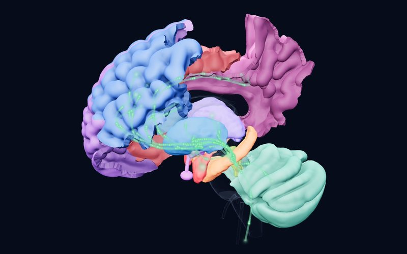

Newsletter · Issue 4 · 30 October 2026
The moment of crisis, rapid help and the circuitry of loneliness
This issue looks at three faces of emotional crisis in adolescence: how a young person in suicidal crisis can be helped outside hospital, a brain stimulation method that works within two weeks in depression, and how frustration disrupts reward learning in irritable youth. In the neuroscience corner, a circuit explains why loneliness can raise both anxiety and the urge to seek out others.
This week's studies
BSystematic review, meta‑analysisCurrent Psychiatry Reports2026
Helping young people in suicidal crisis outside hospital: how well do crisis services work?
15 studies, 15 crisis interventions
DetailsClose
 Atlas
Atlas
Finding
Fifteen studies evaluating 15 crisis interventions were reviewed for children and adolescents in acute crisis because of severe depression, suicidal ideation or self-harm. Four brief, structured interventions reduced suicidal thoughts, suicide attempts and emergency visits. Seven family-focused interventions strengthened family communication and cohesion and reduced hospital admissions; three that linked young people to community services improved continuity of care.
Why it matters
Intensive support in the young person's own setting that involves the family may be a promising alternative to admission in some cases. It shows once more how decisive the family's role is at the moment of crisis.
Limitation
The evidence is largely observational and heterogeneous; as the authors note, causal conclusions cannot be drawn.
Díaz-Téllez C, Peñuelas-Calvo I, Alacreu-Crespo A, et al. Crisis Interventions for Children and Adolescents with Depression and Suicidality: A Systematic Review and Meta-Analysis. Current Psychiatry Reports. 2026. doi:10.1007/s11920-026-01722-z
CRandomized controlled trialBMC Psychiatry2026
Ten days of brain stimulation in adolescent depression: a rapid effect that lasts a month
61 adolescents with acute major depression (high-dose iTBS or sham)
DetailsClose
 Atlas
Atlas
Finding
Sixty-one adolescents with acute depression were randomized to one daily session of high-dose intermittent theta burst stimulation (iTBS) or sham stimulation over the left dorsolateral prefrontal cortex for two weeks. At the end of ten days, depression (HAMD-24; d = 0.71) and suicidal ideation (d = 0.67) scores were significantly lower in the iTBS group than in the sham group. The difference persisted one month later (d = 0.96 and 0.76); anxiety scores did not differ between the groups. Adolescents with poorer family functioning benefited less.
Why it matters
It adds controlled data on a fast-acting, non-drug option in adolescents and maps directly onto the left DLPFC TMS target in the atlas's depression lens. The family functioning finding points in the same direction as the first study.
Limitation
A single-centre, small, single-blind trial; the trial was registered retrospectively.
Yang Y, Ye Q, Peng Z, et al. Rapid and robust effects of high-dose intermittent Transcranial Brain Stimulation (iTBS) on depression and suicidal ideation in adolescents with acute major depression: a 10-day randomised, controlled, single-blind trial. BMC Psychiatry. 2026. doi:10.1186/s12888-026-08452-9
CCross‑sectional study, experimental studyBiological Psychiatry: Cognitive Neuroscience and Neuroimaging2026
Frustration reverses the reward signal in the brains of irritable youth
88 young people (mean age 14.4; 49% female)
DetailsClose
 Atlas
Atlas
Finding
Eighty-eight young people with varying levels of irritability performed a child-friendly probabilistic reward learning task during fMRI; the reward prediction error on each trial was derived with a reinforcement learning model. Before frustration was induced, higher irritability was associated with stronger coupling between reward prediction errors and activity in the ventral striatum and pallidum. After frustration, the pattern reversed: in irritable youth, reward outcomes were encoded more weakly in the ventral striatum, pallidum and right insula. No association was found in the orbitofrontal cortex or left insula.
Why it matters
The first study to show irritability as a state-dependent disruption of reward learning: the problem may lie not only in anger but in learning stalling at the moment of frustration. It suggests a target for interventions aimed at reactivity to frustration.
Limitation
A single task and a single-session frustration induction; how far the findings reflect irritability in daily life is unknown.
Korom M, Burk D, Givens T, et al. Frustration Induction Alters Reward Prediction Error Encoding in Pediatric Irritability. Biological Psychiatry: Cognitive Neuroscience and Neuroimaging. 2026. doi:10.1016/j.bpsc.2026.10.005
CAnimal studyNeuron2026
The paradox of loneliness: a circuit that raises both anxiety and the drive towards others
Adult male mice
DetailsClose

Atlas
Finding
The researchers built a "comparative social deficit" model in adult male mice; much like human loneliness, it raised both anxiety-like behaviour and social preference. GABA neurons in the medial preoptic area became hyperexcitable through loss of the Kv4.3 potassium channel, and changing the activity of these neurons shifted the behaviour in both directions. These neurons directly inhibit serotonin neurons of the dorsal raphe; this inhibitory pathway, strengthened by social deficit, mediated the behavioural changes.
Why it matters
It offers a causal circuit between the hypothalamus and the serotonin system for the seemingly contradictory pattern of loneliness: feeling anxious while turning more towards others. It hints at why social disconnection is such a strong risk factor for anxiety disorders.
Limitation
An animal model in male mice only; it cannot be carried directly over to human loneliness.
Zhang YY, Hu MT, Xie SZ, et al. A GABAergic preoptic-raphe circuit mediates paradoxical coupling of anxiety and social preference after comparative social deficit. Neuron. 2026. doi:10.1016/j.neuron.2026.09.032
Structure of the week

Brainstem
Locus Coeruleus
The brain’s main source of noradrenaline: tunes wakefulness, attention and the stress response; a small nucleus that reaches almost the whole brain.
A question for readers
Being there for a young person in crisis often falls to the family; where you work, is there a structure that prepares families for a crisis and stays with them afterwards?
You can send your answer by email:
[email protected]References
- Díaz-Téllez C, Peñuelas-Calvo I, Alacreu-Crespo A, et al. Crisis Interventions for Children and Adolescents with Depression and Suicidality: A Systematic Review and Meta-Analysis. Current Psychiatry Reports. 2026. doi:10.1007/s11920-026-01722-z
- Yang Y, Ye Q, Peng Z, et al. Rapid and robust effects of high-dose intermittent Transcranial Brain Stimulation (iTBS) on depression and suicidal ideation in adolescents with acute major depression: a 10-day randomised, controlled, single-blind trial. BMC Psychiatry. 2026. doi:10.1186/s12888-026-08452-9
- Korom M, Burk D, Givens T, et al. Frustration Induction Alters Reward Prediction Error Encoding in Pediatric Irritability. Biological Psychiatry: Cognitive Neuroscience and Neuroimaging. 2026. doi:10.1016/j.bpsc.2026.10.005
- Zhang YY, Hu MT, Xie SZ, et al. A GABAergic preoptic-raphe circuit mediates paradoxical coupling of anxiety and social preference after comparative social deficit. Neuron. 2026. doi:10.1016/j.neuron.2026.09.032
This newsletter is for education and is not medical advice; consult your doctor for diagnosis and treatment decisions. The summaries are written in our own words from the studies' abstracts and open-access full texts; see the article itself for details and definitive results.
Level of evidence (as in the atlas): A large consortium, meta-analysis or regulatory decision; B replicated studies or classic case; C single or pioneering study. Preprints have not been peer reviewed.